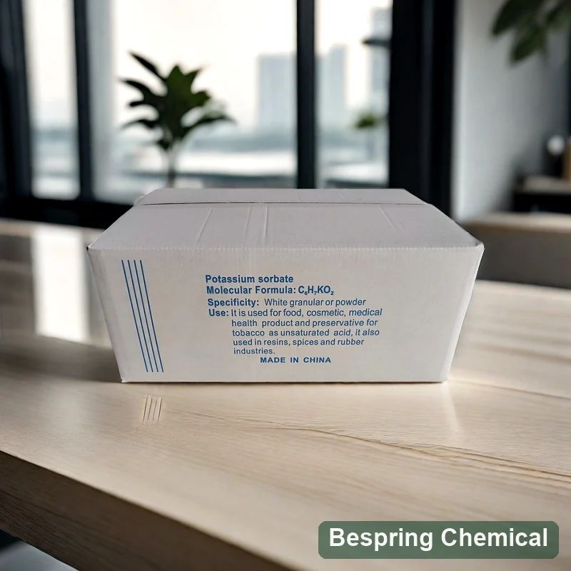
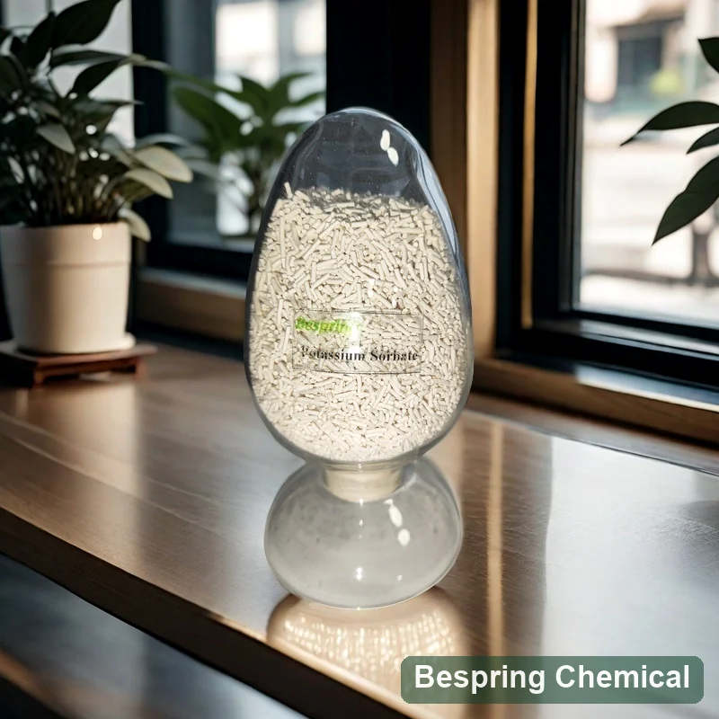
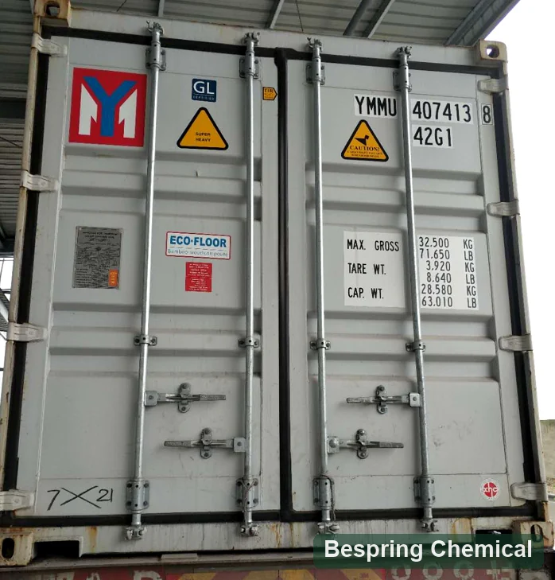

Final pH & acidity
Measure final equilibrium pH after processing and record acidity. The pH of an ingredient solution is not the finished-food pH; confirm the actual formula rather than only the acid addition.
Food preservative · Mould & yeast control · E202
Food grade potassium sorbate (E202 / INS 202) is the water-soluble potassium salt of sorbic acid, evaluated primarily for mould and yeast control in permitted foods and beverages. Bespring supplies it for international B2B sourcing. Confirm the food standard, granular or powder requirement, critical impurities and finished-food pH before requesting a bulk quote.
Share the food category, final pH, target organisms, process, packing, quantity and destination.

Product identity
Potassium sorbate, also called sorbic acid potassium salt or potassium (E,E)-2,4-hexadienoate, is a single preservative substance. The JECFA potassium sorbate monograph identifies CAS 24634-61-5, INS 202, formula C6H7KO2 and formula weight 150.22 g/mol. It is freely soluble in water, whereas free sorbic acid is less water-soluble.
This page covers food grade potassium sorbate with a granular commercial reference, rather than free sorbic acid, a coated preparation or an industrial grade. Confirm the offered particle form and specification; the same chemical identity does not establish identical handling properties or food-grade purity. Evaluate preservation alongside processing, hygiene, water activity, storage and packaging.
Preservative system design
After dissolution, potassium sorbate participates in the sorbic-acid equilibrium. pH changes the balance of undissociated acid and sorbate ions, but efficacy also depends on the organism and food conditions. Primary research on sorbic acid at different pH levels found activity from both forms in its test systems; it does not define a universal food dose or guaranteed bacterial control.
Measure final equilibrium pH after processing and record acidity. The pH of an ingredient solution is not the finished-food pH; confirm the actual formula rather than only the acid addition.
Define the spoilage yeasts and moulds of concern and the initial microbial load. Sorbate should not be presented as a universal pathogen control.
Document heat treatment, cooling, filling and post-process exposure. Recontamination can overwhelm a formulation-level intervention.
Test the final package under realistic oxygen, temperature, light, transport and after-opening conditions across repeat batches.
Compare an unpreserved control with candidate treatments, then monitor microbiology, pH, sensory quality, appearance and package integrity under realistic storage conditions. Ingredient specifications and batch results are quality evidence; finished-food trials establish performance in that formulation.
Application pathways
These examples describe technical evaluation, not universal legal permission or dosage. Confirm the food category, maximum level and labelling rules for each destination market.
Evaluate: complete dissolution, final pH, soluble solids, relevant spoilage yeasts, flavour, haze, filling process and package conditions. Compare the addition point and mixing sequence in the actual beverage.
Evaluate: pH equilibration, water activity, preservative distribution through particles and phases, hot-fill or cold-fill process, and after-opening exposure.
Evaluate: product pH, surface versus bulk protection, starter-culture compatibility, packaging and sensory impact.
Evaluate: water activity, pH, dissolution or distribution, post-bake contamination, package barrier and real shelf life. For yeast-raised dough, assess fermentation compatibility separately; filling trials do not prove dough suitability.
Where fermentation is intentional, verify compatibility with the desired cultures and addition stage. Finished-product yeast-growth control requires a defined process and microbiological validation; do not rely on potassium sorbate to stop uncontrolled active fermentation.
Source-specific technical data
The values below retain Bespring’s supplied commercial reference sheet. They are neither a batch COA nor a declaration of conformity with every E202 or JECFA requirement. Approve the current offered-grade specification, methods and reporting basis before purchase. The impurity differences explained below require particular attention for market qualification.
On small screens, swipe the table horizontally. Keyboard users can focus it and use the arrow keys.
| Test item | Supplied limit | Qualification note |
|---|---|---|
| Appearance | White to off-white granules | Confirm particle form and colour standard |
| Potassium sorbate content, dry basis | 99.0–101.0% | Confirm drying preparation, assay method and uncertainty |
| Loss on drying | ≤ 1.0%; 105°C for 3 h | Mass loss under stated conditions; not a Karl Fischer water result |
| Heat stability | No colour change after 105°C for 90 min | Request visual acceptance reference |
| Acidity, as sorbic acid | ≤ 1.0% | Confirm method |
| Alkalinity, as potassium carbonate | ≤ 1.0% | Confirm method |
| Chloride, as chloride | ≤ 0.018% | Supplied limit |
| Aldehydes, as formaldehyde | ≤ 0.1% | Same numeric JECFA limit; confirm method and reporting basis |
| Sulfates, as sulfate | ≤ 0.038% | Supplied limit |
| Lead | ≤ 5 mg/kg | Higher than JECFA ≤2 mg/kg and amended EU ≤0.1 mg/kg |
| Arsenic | ≤ 3 mg/kg | Higher than amended EU ≤0.1 mg/kg |
| Mercury | ≤ 1 mg/kg | Higher than amended EU ≤0.01 mg/kg |
| Heavy metals, as Pb | ≤ 10 mg/kg | Total expressed as Pb; does not establish separate Pb, As, Hg or Zn results |
| Organic volatile impurities | Meets requirements | Request named reference and method |
| Residual solvents | Meets requirements | Request named reference and method |
The commercial assay range, 99–101% on dry basis, is narrower than JECFA’s 98–102% on dried basis. Both state loss on drying ≤1% at 105°C for 3 hours and aldehydes ≤0.1% as formaldehyde. The commercial lead limit, ≤5 mg/kg, is higher than JECFA’s ≤2 mg/kg. Confirm the complete methods in the original monograph; narrower assay limits do not establish contaminant conformity.
Regulation (EU) 2024/2597, Annex II sets E202 arsenic, lead and zinc at ≤0.1 mg/kg each and mercury at ≤0.01 mg/kg, applicable from 27 April 2025 subject to its transition provisions. The commercial As, Pb and Hg limits above are higher, and the sheet gives no zinc limit. They therefore do not establish conformity with these EU criteria. Request an agreed market-specific specification and element-specific batch results with adequate detection and quantification limits; review the current consolidated rules before approval.
Review the FAO/WHO JECFA potassium sorbate monograph and Codex GSFA preservative listing. Codex provisions are food-category specific. U.S. 21 CFR 182.3640 recognises potassium sorbate as GRAS when used according to GMP; this is not FDA approval of a supplier or batch. Confirm the exact food category, legal level, counting basis and label requirements for the destination. An acceptable daily intake per kilogram body weight is not a food addition rate.
Documents for approval: request the current specification/TDS, SDS, representative and batch COA, methods, and relevant food-grade, origin, allergen or other declarations. Verify each certificate’s product, site and validity scope. “Meets requirements” without a named standard, method and result is insufficient for analytical comparison.
Preservative selection
Compare target organisms, pH, food matrix, process, solubility, sensory targets and permitted use. These ingredients have different identities and formulation roles; none is an automatic equal-dose replacement.
Free acid E200 has lower water solubility and a different molecular weight. Compare dissolution, addition point, pH and the required sorbic-acid equivalent; do not substitute equal masses without calculation and a trial.
Different acid/salt system. Compare target organisms, pH response, sensory impact, sodium strategy and market rules in the final product.
Often evaluated for mould and rope control in bakery systems. Compare dough compatibility, target spoilage and product pH.
Consider when release timing and reduced early interaction are relevant; require the exact carrier, active content and application evidence.
Supplier qualification
Name the standard/version, assay basis, contaminant limits and customer-specific requirements.
The table describes granules. State any powder requirement and request source confirmation, particle-size distribution and dissolution conditions. Form alone does not guarantee mixing performance.
Define pH, target organisms, process, package, storage conditions and shelf-life acceptance criteria.
Request source-specific documents and confirm the reference 25 kg bag, 500 kg MOQ and 13 MT/20-foot container arrangement. Specify bag or carton, liner, pallet plan, destination, Incoterm and delivery timing.
Storage & handling
Buyer questions
It is evaluated primarily for spoilage mould and yeast control. Select the relevant organisms and validate the final food, process, package and storage conditions; ingredient purity does not establish universal bacterial control or a guaranteed shelf life.
pH affects the balance between sorbic acid and sorbate ions after dissolution. Measure the processed food rather than using an ingredient-solution pH or a universal pH cutoff. Organism, water activity and process conditions also affect the trial result.
Do not rely on it to stop uncontrolled active fermentation. Where fermentation is desired, check the culture and addition stage; finished-product preservation needs a defined process and microbiological validation.
Potassium sorbate is the E202 salt, while sorbic acid is the E200 free acid. The salt is more water-soluble and has a different molecular weight. Compare active sorbic-acid basis, pH, dissolution, addition point and market rules rather than replacing them gram for gram.
No. The commercial lead limit of ≤5 mg/kg differs from JECFA’s ≤2 mg/kg. EU Regulation 2024/2597 sets lower As, Pb and Hg limits and adds zinc. Approve the required specification and review element-specific lot results, methods and reporting limits; a heavy-metals total is not a substitute.
The existing commercial reference states a 25 kg bag, 500 kg MOQ and 13 metric tons per 20-foot container. Confirm the actual bag or carton, liner, pallet plan and loading basis for each offer. Photographs and historical supplier COAs do not confirm current commercial terms.
Provide the food standard and edition, granular or powder requirement, key impurities, food category, final pH and water activity where known, organisms and process, quantity, packing, destination, Incoterm and delivery needs. Request the offered-grade specification/TDS, SDS, representative and batch COA, and required source-specific declarations or certificates.
Content updated 5 October 2026 · Technical references: FAO/WHO JECFA, U.S. eCFR and the EU E202 amendment.
Continue your evaluation
Product and logistics references
The hero photograph shows a labelled carton; the images below show a granule sample and a shipping-container exterior. These are visual references, not evidence of food-grade approval, a particular shipment or loading capacity.


Specification-led sourcing
Share the specification, application and logistics details needed to qualify the correct material and documents.